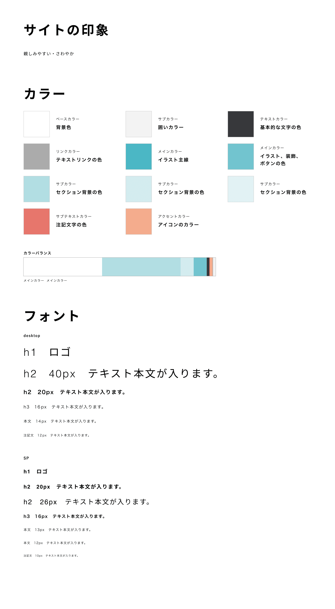
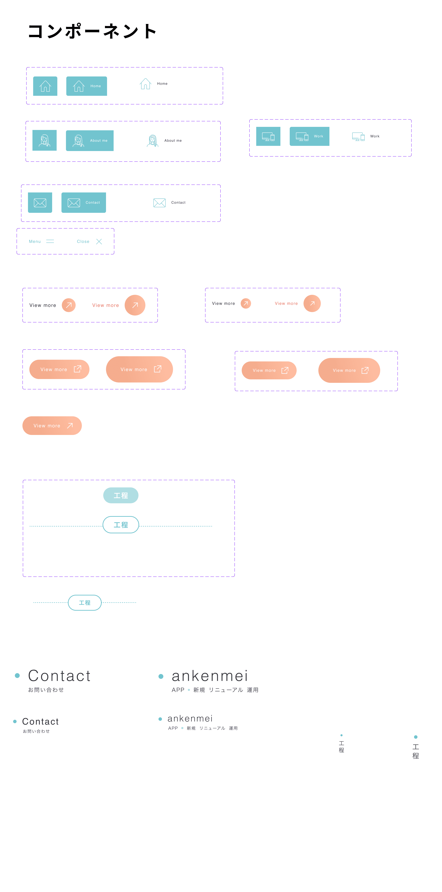

Nao Wakabayashi
- portfolio -
Web site新規
- 時期
- 2026年
- 期間
- 2か月
- 担当
- UXリサーチ ワイヤーフレーム Webデザイン コーディング ライティング
- 使用ツール / 言語
-
- UXリサーチ
- ペルソナ
- ワイヤーフレーム
- Figma
- Webデザイン
- Figma / Illustrator
- コーディング
- html / js / scss / chatGPT / Copilot
- ライティング
- chatGPT / Copilot
- チーム体制
- UIUXデザイナー 1名
- ポジション
- UIUXデザイナー
ポートフォリオを作成した経緯
書面だけでは伝わりにくいスキルや思考プロセスを、実際に動く形で見ていただくことで、より具体的に理解していただけると考えました。
また、案件への向き合い方やデザインの考え方が貴社とマッチするかを判断していただく材料にもなると思い、「どのような思考でこのデザインに至ったのか」を言語化しています。
工程
6つのポイント
ポイント1
人物像
会社を通してご依頼をいただくような架空の人物像を2名設定し、この2人が求める情報をしっかり網羅できているかを確認しながらワイヤーフレームを考えました。
ポイント2
デザインガイドライン
サイトカラー
サイトカラーは悩みましたが、「私を紹介する場」であることから、自分が最も好む水色を採用しました。
また、作品や文章に視線が集まるよう、ペルソナのインプットの妨げにならないように配慮し、薄い水色を中心に濃淡をつけてUIを設計しました。アクセントカラーは薄い水色と相性がよかった薄いオレンジを選び、全体の印象に温かみを加えました。

コンポーネント
ページによってパーツに差異が出ないようにコンポーネントを作成しました。
ボタン系はdefault、hover、activeを用意し、ひとまとめにしています。見出し系はdesktopとSP用で用意しています。

ポイント3
ワイヤーフレーム
「コンテンツはどのように魅せればペルソナにささるか」を検討します。余白とフォントサイズはこのタイミングである程度決めておきます。
このポートフォリオの方向性としては
- 本サイトは制作物を見ていただくことを主目的だが、一方で制作物以外は情報が少なくため、LP（ランディングページ）と同様の構成にする。
- 制作物については1件ずつ詳細にご紹介したかったため、ポップアップでのご紹介ではなくページ遷移で紹介する
で進めることにしました。
ポイント4
イラスト作成
KVやaboutで自分を抽象化したイラストをIllustratorを使用して作成しました。
サイトカラーのセクションでお話しした通り、ペルソナのインプットの妨げにならないように色は使用せず、線でイラストが成り立つようにしました。
ポイント5
Webデザイン
ワイヤーフレームをもとにデザインを仕上げていきました。
イラストに合わせて丸みのあるUIを採用し、カラーをのせた際に生じた余白やフォントサイズの違和感を調整しています。
また、視線誘導や色の濃淡による情報の優先度も整え、全体として読みやすいデザインに仕上げました。
実装段階では、実際の表示を確認しながらレイアウトや見た目のバランスを見直し、必要に応じて調整を行うことで、デザインとユーザビリティの両面からブラッシュアップしています。
ポイント6
コーディング
コーディングは HTML / SCSS / JavaScript を使用して実装しました。
作業の中で、私が手作業で書くよりも効率的に生成できる部分については、AIに指示を出してコードを作成し、その上で自分で微調整を行いながら最終的な形に仕上げています。
AIを活用しつつも、UIの意図やデザインのニュアンスを正しく反映するための調整は必ず自分で行うようにし、品質と再現性を担保しています。
またスクロールでアニメーションが発火するように設定し、「飽きさせないサイト」を心がけました。